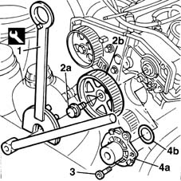

1088C14 water pump - r + r with drive belt removed
- Path
- Procedures > 10 ENGINE UNIT > 1088 ENGINE COOLING > 1088C water pump and thermostat > 1088C14 water pump - r + r with drive belt removed
- Kind
- repair procedure (removal / refitting; the operation number is the code)
- Applies to
- engines: 1.9 JTD 8V; all production periods
- Interactive page
- https://sloeber94.github.io/elrnDB-fMltpl/en/#/2891445
Applies to: engines: 1.9 JTD 8V; all production periods
 Removing
Removing
 Refitting
Refitting1. Use the tool to prevent the pulley turning.
2. Unscrew retaining bolt (2a) and remove pulley (2b) from its seat on the camshaft.
 | Name | Country |
|---|---|---|
1 | Support for counter-torque | 1.860.831.000 |
| Name | Country |
|---|---|---|
1 | Counter-torque | 1.860.831.001 |
3. Undo the bolts.
4. Remove coolant pump (4a) with its underlying O-ring.

Applies to: engines: 1.9 JTD 8V; all production periods
Refitting
RemovingReplace the O-ring before fitting the coolant pump.
Fit the coolant pump and tighten the bolts to torque.
 | Fastening | Component | Ø | Value (daNm) |
|---|---|---|---|---|
- | Bolt | COOLANT PUMP | M8 | 2.5 |
Fit the pulley in its seat on the camshaft.
Tighten the bolt and lock the pulley using the tool. Then tighten the pulley bolt to torque.
| Name | Country |
|---|---|---|
- | Support for counter-torque | 1.860.831.000 |
| Name | Country |
|---|---|---|
- | Counter-torque | 1.860.831.001 |
| Fastening | Component | Ø | Value (daNm) |
|---|---|---|---|---|
- | Bolt | TIMING GEAR DRIVEN PULLEYS | M12 | 12 |